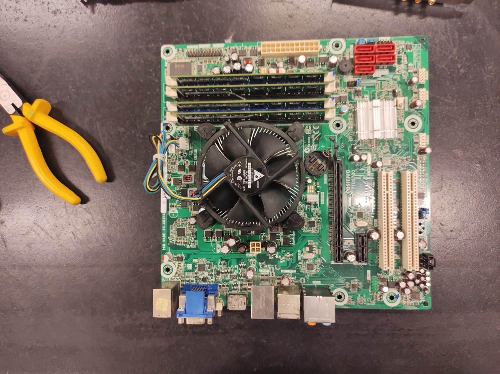

|
 |
Ferramentas necessárias:
– Chave Phillips;
– Chave de Fenda;
– Pincel;
– Álcool isopropílico a 99%;
– Borracha duas cores (vermelho/azul);
ATENÇÃO!: Não se esqueça de guardar com cuidado todos os parafusos.
Passo 1:
Desligue o computador e desconecte todos os cabos e periféricos.
Passo 2:
Remova o painel lateral com a chave Phillips e a bateria da placa-mãe.

Passo 3:
Remova todos os componentes eletrônicos.
Passo 4:
Desparafuse a placa-mãe e retire-a.

Passo 5:
Em seguida, você vai limpar a placa-mãe com o auxílio do pincel, tomando o cuidado
para não relar a parte de metal do pincel na placa.
Passo 6:
Retire também o Cooler da placa-mãe e limpe-o com o pincel.
Passo 7:
Aplique pasta térmica sobre o processador.
Passo 8:
Agora, com o lado azul da borracha, limpe os contatos da memória RAM.
Passo 9:
Chegamos ao fim da limpeza! Agora encaixe e parafuse todos componentes do computador
em seus devídos lugares.
Todos os direitos reservados.